את משקיעה באימונים. הגיע הזמן שגם האוכל יעבוד בשבילך.
מסלול תזונה אישי של 13 שבועות — כ־90 יום — שמחבר בין האימונים שלך, החיים שלך והאוכל שאת באמת אוהבת. שלושה שלבים שמתקדמים איתך, 4 פגישות אישיות עם אור וליווי יומיומי בוואטסאפ עם בינה.
1,500 ₪ כולל מע״מ · תשלום חד־פעמי · למתאמנות STEPS

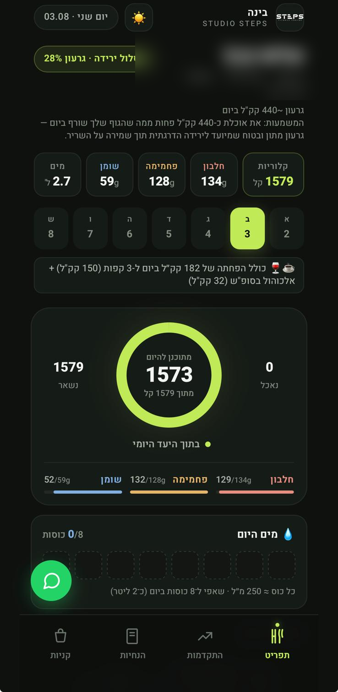
את לא צריכה עוד תפריט.
את צריכה לדעת מה לעשות כשהחיים לא הולכים לפי התפריט.
הבעיה בדרך כלל לא מתחילה בארוחה שתכננת. היא מתחילה ביום שנמרח, בערב שמתחשק מתוק, במסעדה, או בשבוע שבו המשקל לא זז. בדיוק ברגעים האלה רוב התוכניות משאירות אותך לבד.
לא הספקתי להכין כלום
בינה עוזרת לבחור ארוחה מהירה מתוך מה שיש בבית, בסופר או בדרך.
אני יוצאת הערב למסעדה
מקבלת כיוון שמתאים למה שכבר אכלת, לאימון שלך ולמה שנשאר לך היום.
בא לי משהו מתוק
לא מתחילים רשימת איסורים. מתאימים כמות, מעדכנים וממשיכים.
המשקל שוב קפץ
מסתכלים על המגמה ועל ההיקפים — לא נותנים לבוקר אחד למחוק שבוע שלם.
במקום לנחש, לוותר או לחכות ליום ראשון — את שולחת הודעה וממשיכה.
כך בינה עוזרת ביום־יום
לא תפריט קשיח ולא צ׳אט כללי — אלא ליווי אמיתי בתוך החיים עצמם. בינה מכירה את הנתונים שלך, התוכנית שלך והאימונים שביצעת ב־STEPS.
עונה ומחליפה
מוצר, מנה, מתכון או ארוחה — בינה מחשבת את הכמות ומעדכנת את התוכנית.
זוכרת וסוגרת מעגלים
שקילות, מים, חלבון וצעדים לאורך זמן — ואם לפני כמה שבועות החלטתן לעבוד על משהו, בינה חוזרת לזה ובודקת מה קרה.
מחוברת לאימונים
דרך ARBOX היא רואה את האימונים שביצעת ומתאימה את ההכוונה לעומס בפועל.
יודעת איפה את במסלול
באיזה שבוע את מתוך 13, באיזה שלב, ומה כבר ניסיתן יחד — כך שהליווי מתקדם איתך ולא מתחיל מחדש בכל שיחה. בסוף כל שבוע: סיכום שמראה איפה את עומדת ומה המיקוד הבא.
בינה נכנסת בדיוק ברגעים שבהם בדרך כלל הכי קשה להישאר במסלול.
בינה היא מערכת AI ייעודית שאור פיתח עבור STEPS. היא מלווה ומכוונת, ובכל רגע אפשר לכתוב "לדבר עם אור" ולהעביר את השיחה אליו.
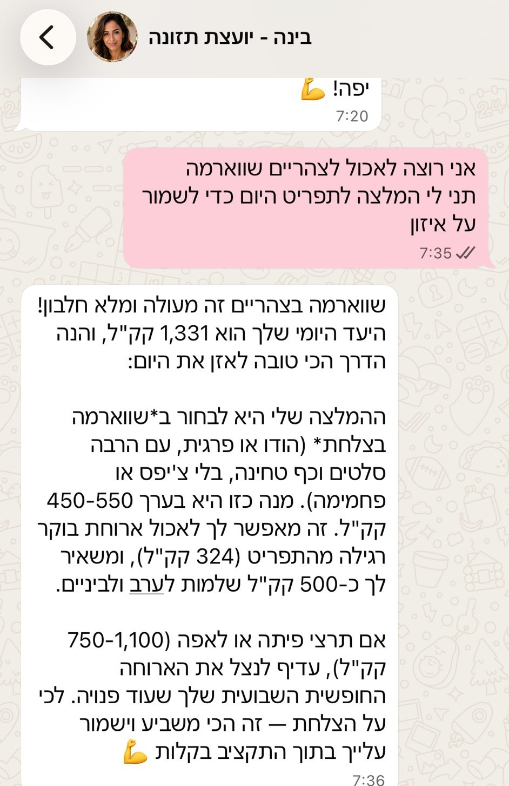
בינה לא רק אומרת "כן" או "לא" — היא עוזרת להבין איך לשלב גם אוכל שאוהבים, בלי לצאת מהמסלול.
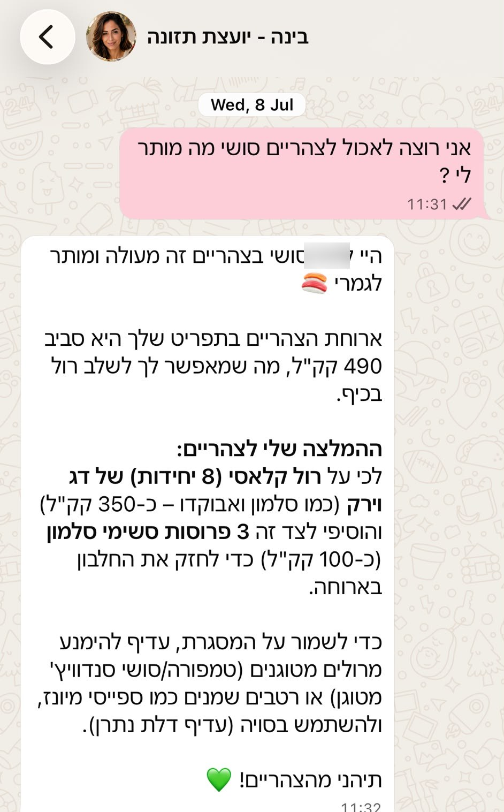
בחירה חכמה גם כשאוכלים בחוץ — בזמן אמת, לפי מה שנשאר בתקציב של אותו יום.
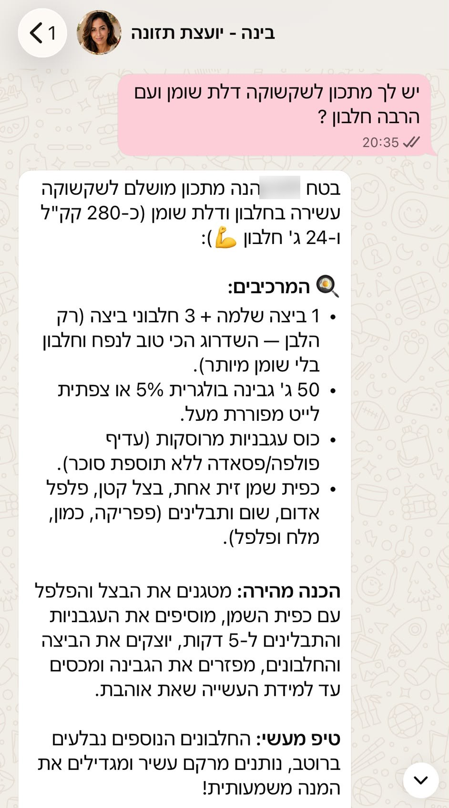
גם מתכון — בנוי סביב מה שהתחשק לך, ומותאם ליעד היומי שלך.
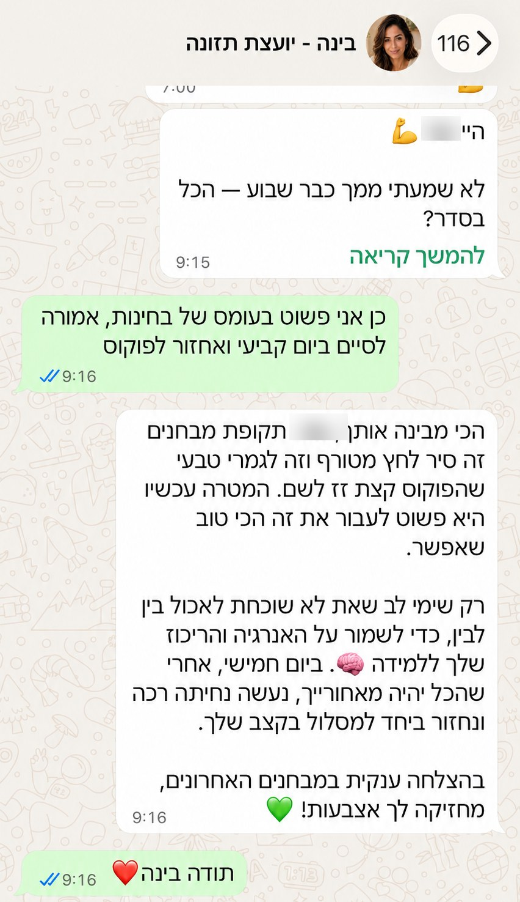
בינה לא רק מחשבת — היא גם מחזיקה אותך בדרך
גם כשיש שבוע עמוס, קפיצה מהשגרה או תחושת פספוס, בינה עוזרת לא להישבר ולא "להתחיל מחדש ביום ראשון".
לפעמים הדבר הכי חשוב הוא לא "לאכול מושלם", אלא לדעת איך להמשיך גם אחרי שבוע פחות טוב.
כל השיחות אמיתיות, מפורסמות באישור המתאמנות. שמות ופרטים מזהים טושטשו.
בינה מלווה אותך כל יום.
אור רואה את התמונה המלאה.
המסלול לא נשען על כך שתזכרי לבקש עזרה. אור עובר על ההתקדמות דרך הדשבורד, נפגש איתך לאורך הדרך ומבצע התאמות כשצריך.

עוקבים מאחורי הקלעים
הדשבורד מרכז את השקילות והמגמה של כל מתאמנת, כך שאפשר לזהות תקיעות לפני שהן הופכות לוויתור.
בן אדם כשצריך
בכל רגע אפשר לכתוב לבינה "לדבר עם אור" ואור נכנס לשיחה.
אחרי שנים שבהן אור ראה מתאמנות משקיעות באימונים ולא מצליחות לחבר אליהם את התזונה, הוא בנה מסלול שמאחד את האימון, המעקב והאוכל במקום אחד.
מהפנייה לפתיחת המסלול — בארבעה צעדים פשוטים.
משאירה פרטים בוואטסאפ
המזכירה חוזרת אלייך, פותחת עבורך את המסלול דרך ARBOX ומשלימה איתך את ההצטרפות.
נפגשת עם אור
שאלון בריאות, הרגלי אכילה, שגרת יום, מטרות, משקל, היקפים והרכב גוף.
מקבלת תוכנית אישית
תפריט חי בדפדפן, החלפות לכל ארוחה, רשימת קניות והנחיות שמתאימות לחיים שלך.
מתקדמת 13 שבועות
בינה מלווה בוואטסאפ, אור עוקב, ובכל 28 יום מסכמים את ההתקדמות, בודקים מה עובד ומה מעכב, ומחליטים יחד אם נדרשות התאמות.
השבוע הראשון מיועד להסתגלות וללמידת השגרה — לא לשיפוט לפי מספר בודד על המשקל.
לא עוד שלושה חודשים של אותו תפריט.
בינה יודעת באיזה שבוע את נמצאת, מה כבר ניסיתן יחד ומה נשאר לעשות. כל שלב במסלול מקבל מיקוד אחר, בהתאם למטרה ולהתקדמות שלך.
שלב 1: בונות את הבסיס
מכירות את השגרה שלך, מזהות איפה הכי קשה לך ומבססות את הדברים שמחזיקים את התהליך: ארוחות, חלבון, מים, שקילות, אימונים והרגלים שמתאימים לחיים שלך.
שלב 2: מדייקות את הקצב
בודקות מה באמת עובד, מה עדיין מעכב אותך ואילו התאמות יעזרו לך להתקדם בצורה מציאותית ועקבית.
שלב 3: נכנסות לישורת
מחזקות את ההרגלים שכבר נבנו, מסתכלות על התמונה המלאה ומסיימות עם סיכום הישגים והחלטה ברורה איך להמשיך.
המיקוד משתנה לפי המטרה שלך: ירידה במשקל, חיטוב ושינוי היקפים, או אכילה נכונה והרגלים.
ארבע הפגישות עם אור
פגישות פנים אל פנים בסטודיו — כל אחת בנקודה שבה ממילא מסכמים ומחליטים מה הלאה.
שאלון בריאות והרגלים, שגרת היום, המטרה והמסלול שמתאים לך. זו נקודת הפתיחה שהכול נמדד מולה.
מסכמים את שלב הבסיס ובוחרים מה חשוב לדייק בחודש הבא.
מסתכלים על הדרך שכבר נעשתה ומחליטים מה ייתן את ההשפעה הגדולה ביותר בהמשך.
מסכמים את ההישגים מול נקודת הפתיחה ומחליטים יחד איך ממשיכים מכאן.
בכל אחת מארבע הפגישות מבוצעת מדידה מלאה — משקל, היקפים והרכב גוף.
אותו מסלול. מיקוד אחר לפי המטרה שלך.
ירידה במשקל
המעקב מתמקד במגמת המשקל, בהיקפים, באימונים ובהתנהלות שמאפשרת ירידה בקצב בריא.
חיטוב ושינוי היקפים
המעקב מתמקד בהיקפים, בחלבון, באימוני כוח ובהרכב הגוף — בלי להבטיח שהמשקל חייב לרדת.
אכילה נכונה והרגלים
המעקב מתמקד בארוחות מסודרות, עקביות, תחושת שליטה ובהפיכת ההרגלים לעצמאיים יותר.
אוכל אמיתי. תוכנית חיה. הכול בטלפון.
בלי PDF שנשכח, בלי אפליקציה נוספת ובלי מוצרים מיוחדים שצריך להזמין. התוכנית נבנית סביב מה שאת אוהבת, מה שנוח לך ומה שהמשפחה כבר אוכלת.
← החליקי לצדדים
היום שלךכמה נשאר, כמה חלבון, כמה מים
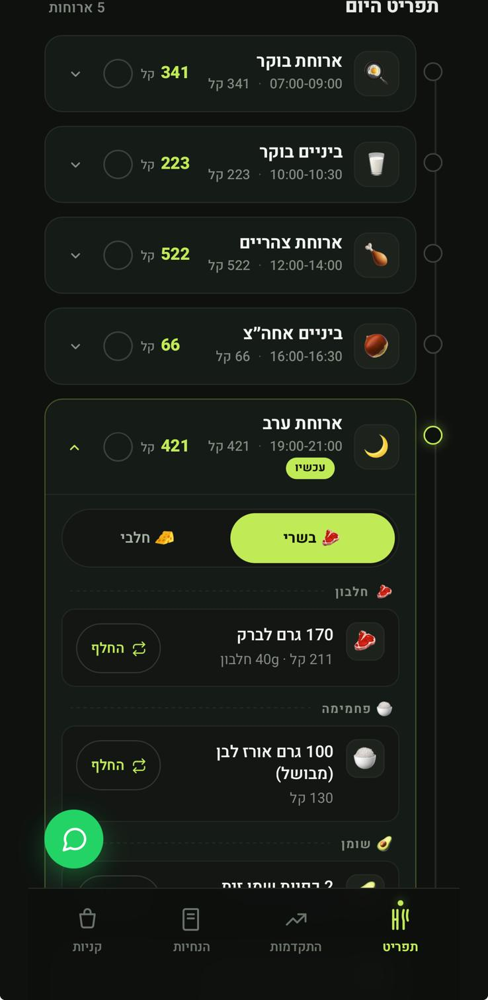
הארוחות וההחלפותבשרי או חלבי, וכפתור החלפה לכל מרכיב
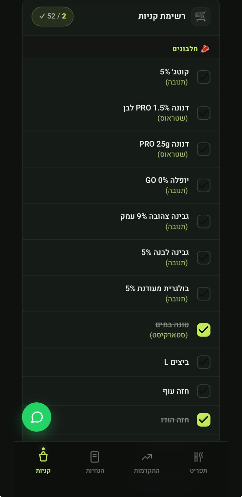
רשימת הקניותלפי מותג. מסמנים תוך כדי הסופר
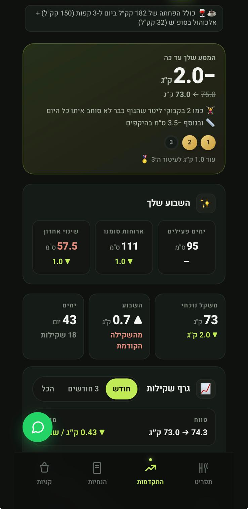
ההתקדמותמה ירד עד היום, במספרים
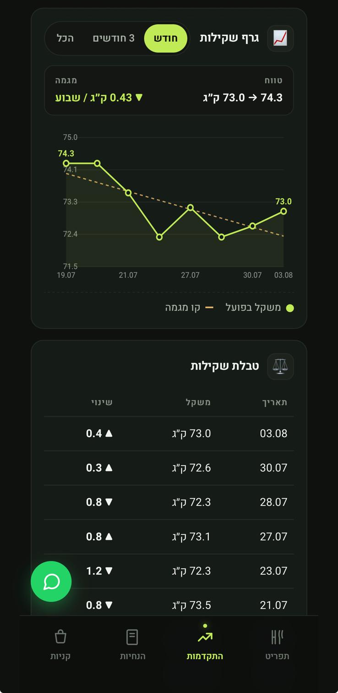
גרף השקילותקו המגמה יורד גם כשהמשקל קופץ
- אוכל מהסופר, לא "מוצרי דיאטה"
- החלפה לכל מרכיב בלי להרוס את היום
- רשימת קניות מסודרת לפי התוכנית
- מקום למסעדות, למשפחה וגם למתוק
צילומי המסך אמיתיים, מהטלפון של מתאמנת בתוכנית ובפרסום ברשותה — פרטי הזיהוי שלה מטושטשים.
לא מסתכלים רק על המספר שעל המשקל.
לאורך המסלול מסתכלים על מגמת המשקל, היקפים, אימונים, חלבון, פעילות יומיומית, רעב ושובע, שינה, סטרס וההתנהלות בפועל. לא נשענים על תחושה של יום אחד.
אלה התחומים שבינה ואור מסתכלים עליהם לפי הנתונים הקיימים והשיחה איתך — לא כל תחום נמדד אוטומטית בכל שבוע.
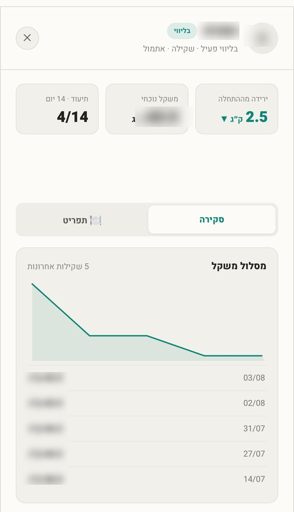
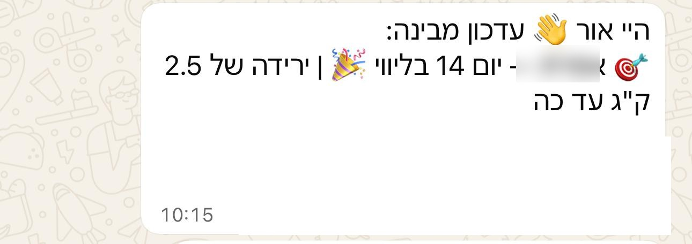
דוגמה אמיתית מתוך הליווי
לא רק "תחושה טובה" — אלא מעקב אמיתי, גרף התקדמות ותמונה ברורה של מה קורה לאורך הדרך.
התוצאה אישית ואינה מבטיחה תוצאה זהה. החומרים מוצגים באישור המתאמנת; השם שונה ופרטים מזהים טושטשו.
תוצאות נוספות מתוך הליווי
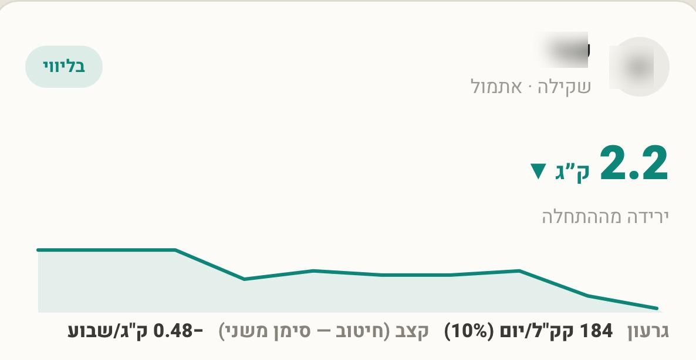
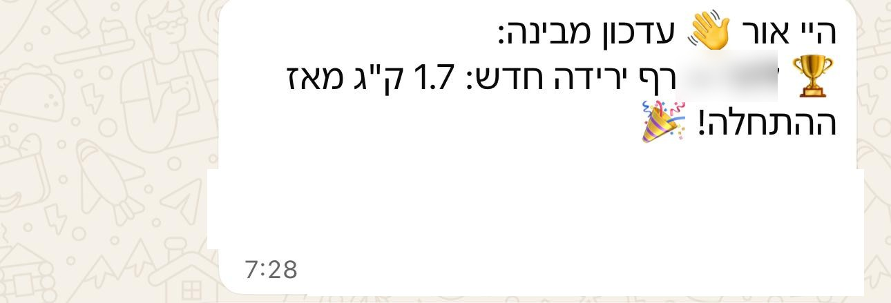
השמות שונו לשמירה על פרטיות המתאמנות; הנתונים אמיתיים ומתועדים במערכת. בירידה במשקל עובדים בקצב בריא ומציאותי — התוצאה משתנה בין מתאמנת למתאמנת ותלויה בנקודת הפתיחה, בהתמדה ובמצב הבריאותי.
אם גם את רוצה ליווי שלא משאיר אותך לבד — זה בדיוק בשבילך
13 שבועות שבהם את לא נשארת לבד מול האוכל.
המחזור מוגבל לעד 10 מתאמנות כדי לשמור על מעקב, פגישות ופיקוח אמיתי לאורך הדרך.
פתיחה אישית
- שאלון בריאות והרגלים
- פגישה אישית עם אור
- משקל, היקפים והרכב גוף
- הגדרת מטרה ומסלול
תוכנית אישית
- תפריט חי בטלפון
- החלפות וגיוונים
- רשימת קניות
- התאמה לחיים ולאימונים
ליווי לאורך 13 שבועות
- בינה זמינה בוואטסאפ 24/7
- סיכום שבועי עם מיקוד להמשך
- בדיקה חודשית אסטרטגית
- מעקב לפי השלב שבו את נמצאת
פיקוח אנושי
- 4 פגישות אישיות עם אור
- מעקב דרך הדשבורד
- מעבר לאור לפי הצורך
- סיכום הישגים בסוף המסלול
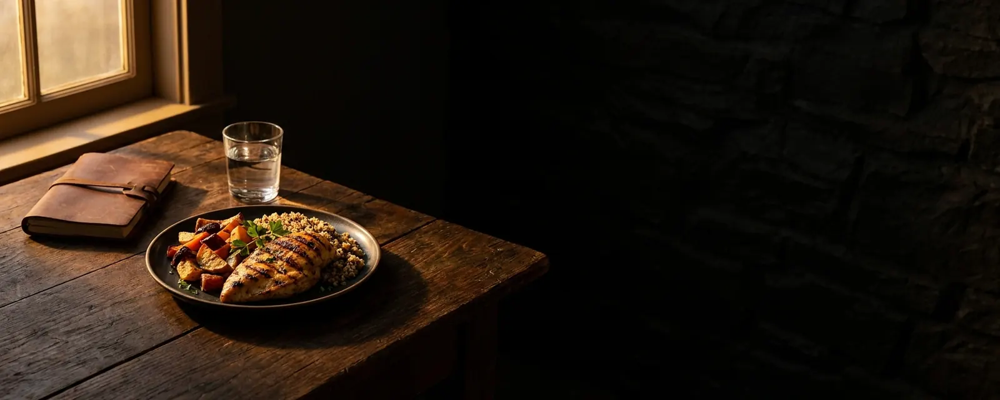
מסכמים את הדרך, המדידות וההישגים. אפשר לסיים עם הכלים והתוכנית שקיבלת, או לבחור להמשיך עם בינה ב־99 ₪ בחודש.
ההמשך מתבצע רק לאחר אישור שלך ופתיחת המנוי מול אור דרך ARBOX — אין חיוב אוטומטי ואין תשלום ישיר באתר.
אם בחרת לסיים, דף התפריט נשאר זמין עבורך, אך הליווי והמעקב הפעיל של בינה מסתיימים.
רוצה להמשיך? מדברות עם אור.
לפני שאת מצטרפת, הנה מה שבדרך כלל שואלים
האם התפריט משתנה בכל חודש?
לא בהכרח. בכל 28 יום מסכמים את ההתקדמות ובודקים אם נדרשות התאמות. שינוי נעשה לפי הצורך, לא רק מפני שעבר חודש.
בינה היא בן אדם?
לא. בינה היא מערכת AI ייעודית שאור פיתח עבור STEPS. היא מכירה את התוכנית והנתונים שלך, ובכל רגע אפשר לבקש לדבר עם אור.
האם המסלול מחליף דיאטנית קלינית או רופא?
לא. בינה ואור מלווים ומכוונים, אך אינם מחליפים טיפול של דיאטנית קלינית או רופא. לפני תחילת המסלול ממלאים שאלון בריאות, ובמקרה הצורך ייתכן שתידרשי להתייעץ עם איש מקצוע מתאים.
צריך להוריד אפליקציה?
לא. השיחות מתנהלות בוואטסאפ והתוכנית האישית נפתחת בדפדפן בטלפון.
אפשר להתאים את התוכנית לצמחונות, ללא גלוטן או ללא לקטוז?
כן. ההעדפות וההגבלות נאספות בתחילת הדרך וניתן לעדכן אותן גם בהמשך.
המסלול מיועד רק למתאמנות STEPS?
כן. המסלול בנוי סביב האימונים שלך בסטודיו ומתחבר לנתוני האימונים ב־ARBOX.
מה קורה אחרי 13 השבועות?
אין חיוב אוטומטי. אפשר לסיים — ודף התפריט נשאר זמין עבורך — או לבחור להמשיך עם בינה ב־99 ₪ בחודש. ההמשך נפתח מול אור דרך ARBOX.
מה מדיניות הביטולים?
מדיניות הביטולים ותנאי השירות מופיעים בקישור המלא לפני התשלום ובתחתית הדף.
13 שבועות. שלושה שלבים. תוכנית אחת שמתקדמת איתך.
תפריט אישי, ליווי יומיומי של בינה, סיכומים שבועיים, בדיקות חודשיות ופיקוח של אור — כדי שלא תישארי לבד ברגעים שבהם בדרך כלל הכי קל לוותר.
1,500 ₪ כולל מע״מ · ההצטרפות מושלמת מול המזכירה דרך ARBOX · אין סליקה באתר
בינה מלווה ומכוונת אך אינה מחליפה דיאטנית קלינית או רופא. אור סבוני הוא מאמן כושר ואינו דיאטן קליני. לפני תחילת המסלול תתבקשי לענות על שאלון בריאות קצר. לפרטים המלאים — מדיניות הביטולים ותנאי השירות.